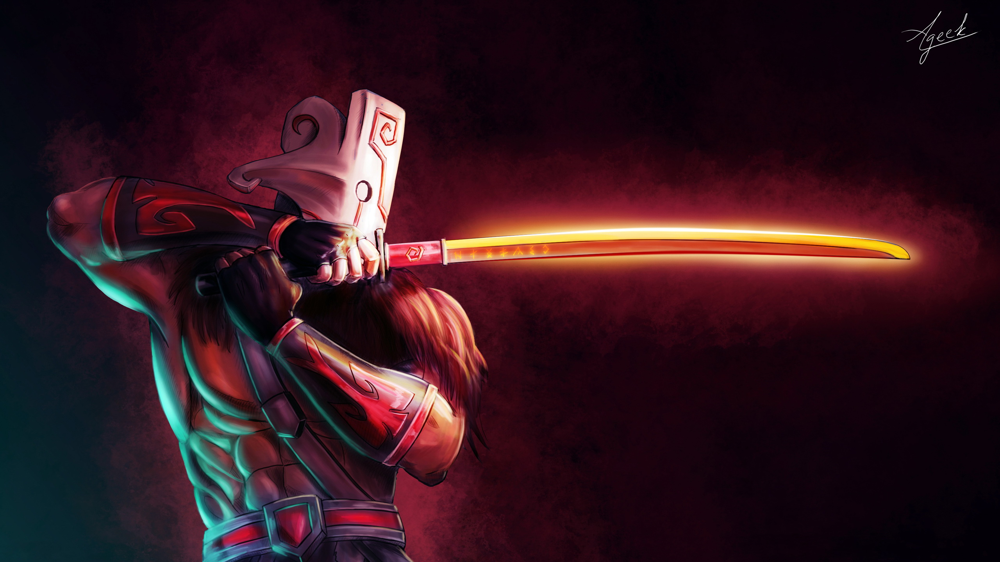

Juggernaut или Юрнеро — это герой с ближним типом атаки, основным атрибутом которого является Agility attribute symbol.png ловкость. Его первая способность, Blade Fury, вызывает вихрь из сокрушительных ударов клинком вокруг Juggernaut, делая его невосприимчивым к магии и нанося урон врагам поблизости. Вторая способность, Healing Ward, призывает Healing Ward, лечащий всех союзников неподалеку и способный передвигаться. Скорость лечения зависит от максимального здоровья союзника. Пассивная способность, Blade Dance, дает Juggernaut шанс нанести критический урон при атаке. Ультимативной способностью, Omnislash, Juggernaut прыгает ко врагу, атакуя его, а затем врагов рядом с ним. При атаке Juggernaut становится неуязвимым. Покупка Aghanim's Scepter icon.png Aghanim's Scepter добавляет новую способность — Swiftslash, схожую с ультимативной, но отличающуюся меньшей длительностью и меньшей перезарядкой.
Герой крутится в вихре сокрушительных ударов клинком, становясь невосприимчивым к магии и нанося урон врагам поблизости.
1 Blade Fury нельзя использовать во время действия Omnislash и Swiftslash. 2 При использовании не прерывает произносимые способности Juggernaut. 3 При использовании применяет иммунитет к заклинаниям на всю длительность и базовое развеивание. 4 Пока действует способность, Juggernaut не может подвергнутся действию призначной формы. Бафф от него будет мгновенно снят.
Призывает тотем, лечащий всех союзников неподалёку и передвигающийся со скоростью 325. Объём лечения зависит от максимального здоровья союзника. Действует 25 сек.
1 После применения вард сразу следует за Juggernaut, если ему не была отдана другая команда. 2 Восстановление представлена в виде ауры. Бафф лечения задерживается на 2,5 сек. 3 Лечение представлено в виде восстановления здоровья, поэтому вард восстанавливает 0,2%/0,3%/0,4%/0,5% от максимального запаса здоровья с интервалом в 0,1 сек.
Обязательно посетите вторую страницу моего сайта!